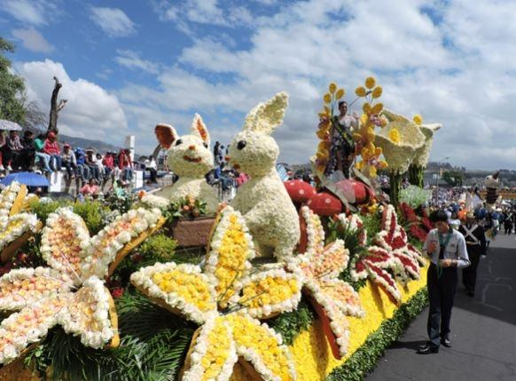
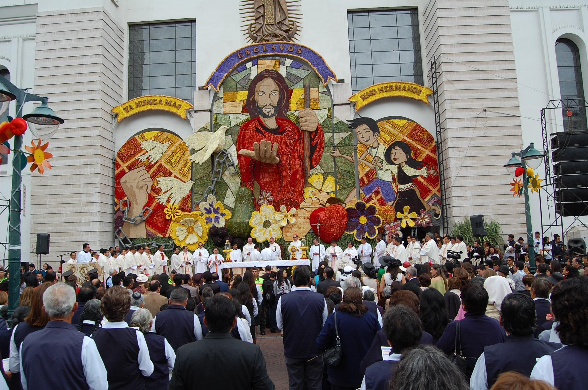
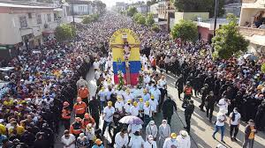
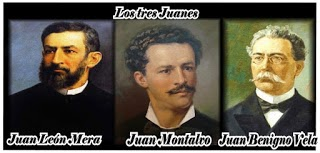
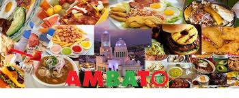
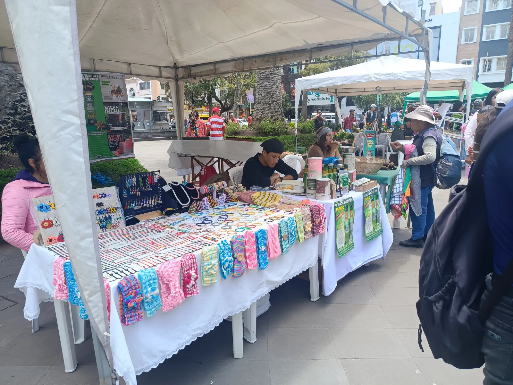
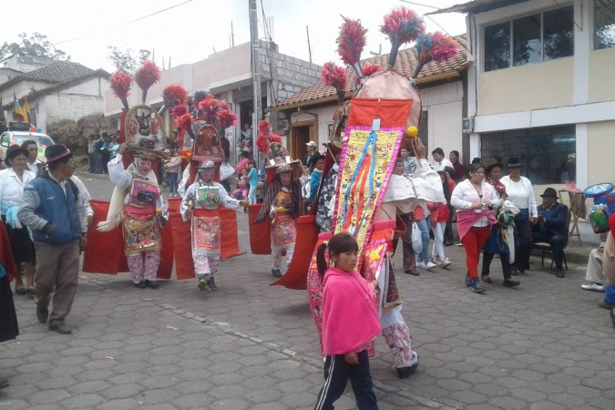
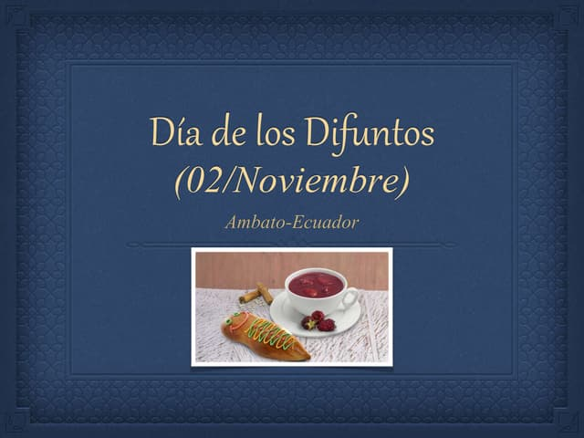

Fiesta de la Fruta y de las Flores
Se celebra en febrero, durante el Carnaval.
Es la fiesta más importante de la ciudad,
con desfiles,carrozas decoradas con frutas
y flores, danzas, ferias y actividades culturales.
Nació tras el terremoto de 1949 como símbolo
de esperanza y reconstrucción.

Bendición del Pan y las Frutas
Acto religioso y simbólico que forma parte
de la Fiesta de la Fruta y de las Flores
donde se agradecen los frutos de la tierra.
Se realiza en la catedral.

Semana Santa ambateña
Celebración religiosa con procesiones
solemnes, en especial la del Viernes Santo.
Participan fieles de toda la provincia.

Culto a los Tres Juanes
En honor a tres personajes ilustres de la
ciudad: Juan Montalvo, Juan León Mera y Juan
Benigno Vela. Se realizan actos cívicos y
culturales recordando su legado.

Comidas tradicionales en festividades
El pan de Ambato, las empanadas de viento,
el cuy asado, el mote y los jugos de frutas
locales son protagonistas en fiestas y
reuniones familiares.

Ferias y mercados dominicales
Ambato mantiene la tradición de los
mercados populares donde se vende fruta,
pan, flores y artesanías, especialmente
los fines de semana.

Festividades parroquiales
Cada parroquia o barrio celebra
su santo patrono con juegos populares,
bailes, música en vivo y comida típica.

Día de los Difuntos (2 de noviembre)
Las familias visitan los cementerios con
flores y preparan platos típicos como la
colada morada y las guaguas de pan.
